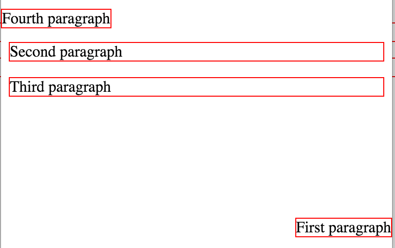
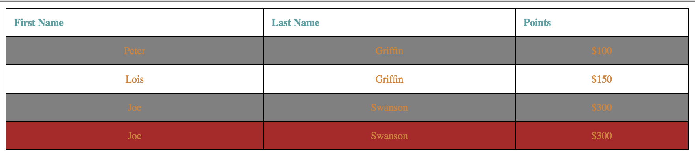

This homework helps you to apply CSS skills that you learned during the class with pratical problem sets. The answer should be written in a valid HTML and CSS form that should be rendered in Chrome browser. You can write answers in Korean. The score for this homework will take twice more portion than the first homework. If you have difficulties in understanding the question, please let me know. Slack or E-mail This homework has to be submitted by , and the solution will be provided during the class. No late submission is allowed this time due to the midterm.
Understanding CSS Concepts
Describe difference between HTML and CSS with respect to the roles they take in a web page? (5 point)
Answer: HTML은 페이지의 구조, 명세, 틀 을 잡아주는 역할을 하고, CSS는 HTML로 잡힌 틀에 모양, 색, 위치 등 디자인을 하기위해 사용됨
CSS stands for Cascading Style Sheet, what does Cascading means? (5 point)
Answer : Cascading은 폭포라는 듯이고 폭포는 물이 위에서 아래로 흐른다. 이처럼 css를 적용할때 우선순위를 두어 적용한다는 말이다. 예를들어 수업시간에 내부,외부 스타일 적용방식들이 충돌하면 external>internal 순으로 적용된다는 예를 봤었다.
List three different methods to use CSS with a HTML document and write a brief decription how to use it(5 point)
Answer:
1.외부스타일 : style.css 처럼 따로 css파일을 만들어 html 파일에 css파일을 링크하여 이용
2.내부스타일 : head부분에 <style> </style>"을 이용하여 스타일을 지정하는 방식
3.태그에 직접입력 <h1 style =" color : orange;"> 이런식으로 태그속에 하나하나 일일이 입력하는 법
For the three different methods discussed at the previous problem, describe pros and cons (advantage and disadvantages) of them comparing with others(10 point)
Answer:
외부스타일 사용 장점 : 하나의 css 파일로 여러개 html파일 커버가능(reusable), 일관 변경이 쉽다, HTML 파일 용량 감소(헤드부분에 들어가야할 스타일들이 외부 연결하는 태그 한줄로 끝나서)-> 네트워크 오버해드 감소, 로딩타임 감소 등..
외부스타일 사용 단점 : html 파일과 css파일로 나뉘다 보니 적어도 두개이상의 파일을 관리해야하고 작업할때 한번에 못보니 귀찮음..정도?, 무분별하게 css파일을 구성하게되면 나중에 큰범위의수정할때 정신없을수 있다. 개발할땐 귀찮더라도 이렇게 하는게 가장 추천하는 방법이고, 개발시에 css의 어느정도 구성, 위치 등을 잡고 체계적으로 만드는게 중요하다.
내부스타일 사용 장점 : html 파일마다 스타일태그를 갖고있어 작업이 용이하고, 찾기 쉽다. 한 html 파일 안에 여러요소를 한방에 다룰수 잇음
내부스타일 사용 단점 : 여기서 적용한 css부분을 다른파일에 적용할 수가 없음(재사용불가), html 파일 용량 커짐
inline style 장점 : 어느태그에 무엇을 적용했는지 직관적으로 볼수있고 테스트하기 좋다.
inline style 단점 : 반복적인 작업이 너무 많다(한게가 있다.). 외부, 내부스타일과의 충돌 가능성때문에 원하는 결과를 못얻을 수 있다.
When we want to set font style using CSS, we can set generic family and font family. What are the difference between them?(5 point) Which one is recommended to state as a last option to show in a web-page? (5 point)
Answer: font-family는 내가 원하는 글꼴들로 구성할 수있다.즉, 글꼴 모음이다. generic-family는 비슷한 글꼴들의 모임이다.즉, 글꼴 유형이다. 따라서, font-family가 generic-family보다 상위 단계라고 생각한다. 그리고 font-family의 마지막은 generic-family로 하는게 좋다. 왜냐하면 마지막까지 원하는 글꼴을 못찾앗을 경우 generic family에서 비슷한글꼴을 가져와서 사용할 수 있으니까.
When we want to control space of an element, we can use padding and margin. What are the difference between them?(5 point)
Answer: 어떠한 태그를 기준으로 Padding은 내부여백이고, margin은 외부여백이다. 테이블을 예로들면 한 칸의 크기를 조정하려면 padding을이용해야하고 테이블의 위치를 조정하려면 margin을 이용해야한다.
When we set font size using CSS, we can use units of em, %, px. How are they different? (5 point)
Answer:px는 절대값이다. 그냥 고정값이다. 변하지않는다.
em과 %는 상대값이다 즉 어떠한 값에의해 크기가 좌우된다는 뜻이다. em은 브라우저의 기본 폰트사이즈에 따라 상대적으로 정해지고, %는 device마다의 default size를 기준으로 정해진다.
There are four ways to set conditional property for a sequence of elements (parent-child, siblings) - we called it as Combinator in the class. Describe the name of the four combinators with brief descripton and give a short example (10 point)
자손선택자 : div p { background-color: red;} 라고 표기할 수있고, 이 뜻은 div가 갖고있는 모든 p속성에 빨강 배경을 적용하란 뜻이다.
자식선택자 : div>p { background-color: gray;} 라고 표기할 수있고, 이뜻은 div의 직계자식 p만 회색 배경을 적용하란 뜻이다. 즉 한단게만 내려간다.
인접형제선택자 : div+p {background-color:red;} 라고 표기할 수있고, 이말은 div와p가 같은부모를 가지고 있고 div의 바로 뒤에 오는 p만 빨강배경을 적용한다.
일반형제선택자 : div~p{background-color : gray;} 라고 표기할 수있고, 이 뜻은 div와 p가 같은 부모를 갖고있고, div의 뒤에오는 p요소에 회색배경을적용한다.(p가 여러개면 여러개 적용됨)
Make an aesthetic web page using CSS
Open border-shorthand.html and fill the border-single class to have the second div element to have the same effect with the first div element. You can use only one element in the border-single CSS class. (2 point)
Open last-paragraph.html and fill in the style tag to make only the last paragraph (the third one) to have the following effects(5 point)
Make the font color as red
Make the font to be bold
Make the font size larger (xx-large)
Set the font as Arial and its corresponding generic family
Make all the characters to UPPERCASE
Using position.html file, add style elements to make the paragraphs shown like below. (8 points)

Hints
For the first and fourth paragraph, you have to use fixed position
For the second paragraph, you have to specify margin to avoid overlapping with the top most paragraph
Using table.html file, modify the table to be shown like below. You must follow the rules below.(15 point)

Specific color, font, border style does not matter unless it is specifically mentioned below
Create an external css file (file name: table.css) and link it in the table.html
The table header elements have to be left aligned
The td elements have to be center aligned
When a mouse pointer is over a row, it has to change color including the table header row (green, ...)
Make every 2nd line (line number 2, 4, 6, 8, 10, ...) to have darker color
You do not need to set the background-color for td and th elements. If you do so, making hover to change color will be harder as the solution is not covered in the class
Create following navigation bar using navigation-bar.html with the following rules - original source: original page. (25 points)
For the navigation bar background, you have to use nav-bar-bg.png file
For the navigation bar, you have to set the width as 100% and the height as 140px
The fonts size of characters is 20px, the color is #483535, and the font is Nanum Gothic
When the mouse point is over the link, it should show only one hover-icon.png file in a default location(left top) - you don't have to worry about making it same as the original site